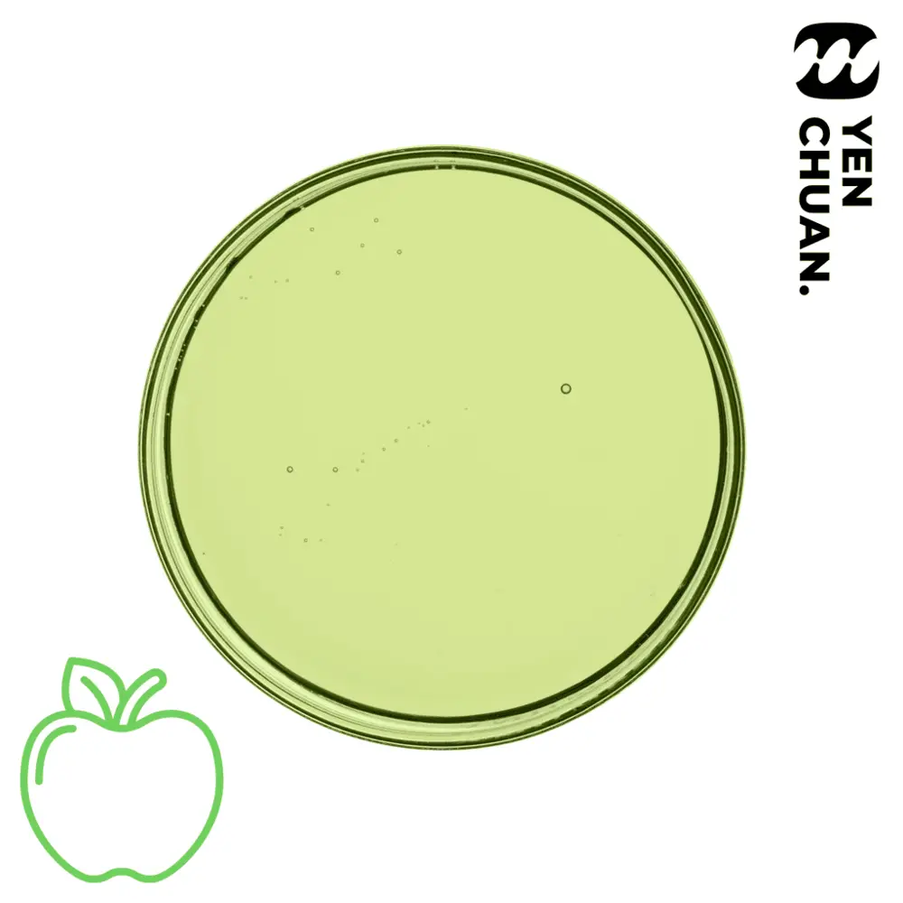

產品說明
原站說明尚未翻譯，展開下方可核對英文；不新增或推測產品功效。
查看英文原文（尚未翻譯）
Slightly more sour than regular red apples, it’s green apple syrup!
Find red apples too sweet for your tastes, why not try this for a change?
Unit size: 5kg
Units per carton: 4
Storage conditions: Room temperature
MOQ: 15 cartons